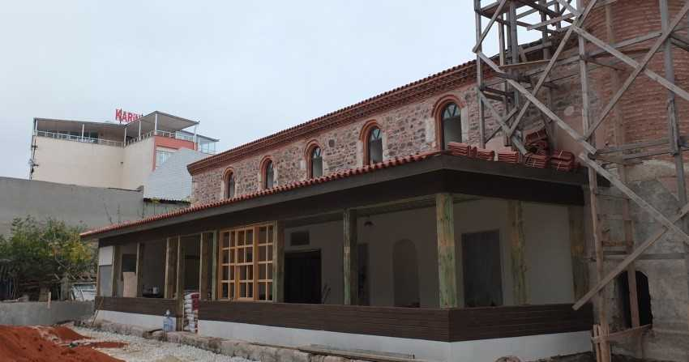
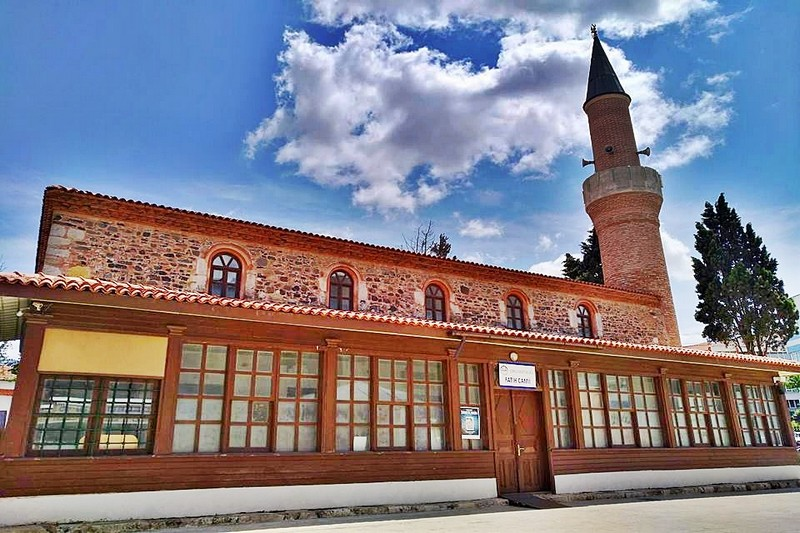
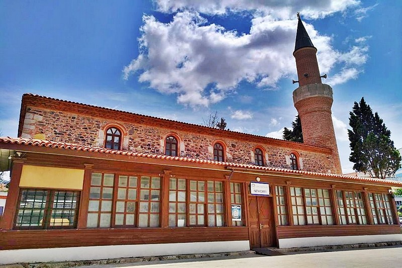

Fatih Camii Hakkında Genel ve Tarihi Bilgiler
Çorlu İlçesi, Cemaliye Mahallesi'nde bulunan Fatih Cami, Fatih Sultan Mehmet Vakfı mülkiyetindedir. Fatih Sultan Mehmet’in süt annesi Daye Hatun tarafından 1453 yılında yaptırılmıştır. İlçe merkezinde, yerleşim alanı içerisinde bulunan cami, dikdörtgen planlı, moloz taş malzemeyle yapılmıştır. Son cemaat yeri bugün camekanlı olan caminin küçük bir avlusu vardır. Minaresinin gövdesi kalın, petek kısmı incedir. Camiye girişi sağlayan kapı üzerinde bulunan kitabeden 2. Mahmud’un sadrazamı Benderli Mehmet Selim Paşa tarafından 1824 yılında duvarları ve minaresi dışında esaslı bir tamirden geçirildiği öğrenilmektedir. Cami bahçesinde bulunan hazirede Osmanlı Dönemi’ne ait mermer mezar taşları bulunmaktadır. Mezarlar arasında Kırım Giray Han sülalesine ait mezar bulunmaktadır. Sayfanın altında ilgili bazı görselleri bulabilirsiniz.Kaynak: Tekirdağ İl Kültür ve Turizm Müdürlüğü
Adres Bilgileri
Adres: Cemaliye Mahallesi Çorlu / Tekirdağ
Fatih Cami ile İlgili Bazı Fotoğraflar

 

Detayli Bilgi
Detaylı Bilgi ve daha fazla fotoğraf için "Türkiye Kültür Portalı" web sayafasına buradan ulaşabilirsiniz.
Sayfama ait bilgiler ve resimler de Türkiye Kültür Portalı web sayfasına aittir.